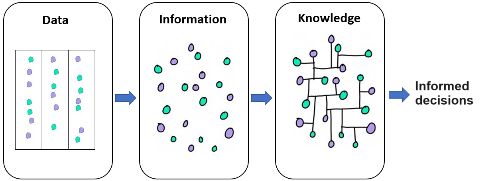

flowchart LR
A[Traditional <br/> Statistics]--- B[Descriptive statistics]
A --- C[Inferential statistics]
B --- D[Measures of frequency: <br/> e.g., frequency, percentage.]
B --- E[Measures of location <br/> and dispersion: <br/> e.g., mean, standard deviation.]
C --- H[Estimation]
C --- I[Hypothesis Testing]
style A color:#980000, stroke:#333,stroke-width:4px
1 Introduction
When we have finished this chapter, we should be able to:
1.1 Why learn basic statistics?
Knowledge of the fundamental principles of statistics, data analysis, and research methodology is essential for professionals in psychology and other social sciences today for three main reasons:
Understanding key statistical indicators: This knowledge allows professionals to interpret data and indicators from sources such as ELSTAT, EUROSTAT, and WHO. With this expertise, they can effectively assess and verify relevant information from around the world, hereby helping to counter misinformation. Key examples of these indicators include population health status, social inequalities, rates of violence and crime, unemployment rates, educational attainment levels, poverty rates, and access to healthcare services.
Critically analyzing research studies: Professionals are better equipped to evaluate research studies and their findings, ensuring they can identify strengths, weaknesses, and potential biases.
Conducting independent research: Familiarity with statistics enables professionals who conduct their own research to collaborate more effectively with statistical experts, enhancing the overall quality of their work.
1.2 The discipline of Statistics
Statistics relies heavily on probability theory and encompasses empirical methods for collecting, organizing, summarizing, and presenting data, with the objective of drawing inferences about the population from which the data are derived. It includes different theoretical frameworks such as traditional (frequentist) statistics and Bayesian statistics. In this course, we will cover classical parametric and nonparametric statistical tests of traditional statistics.
The discipline of traditional (frequentist) statistics includes two main branches (Figure 1.1):
Descriptive statistics that includes measures of frequency and measures of location and dispersion. It also includes a description of the shape of the data distributions.
Inferential statistics that aims at generalizing conclusions made on a sample to a whole population. It includes estimation and hypothesis testing.
In a research study, both descriptive and inferential statistics are commonly used. First, researchers present descriptive statistics (e.g., demographic data, baseline characteristics) to provide a clear snapshot of the sample. Then, inferential statistics are applied to test hypotheses and draw conclusions about the broader population from which the sample was drawn.
1.3 Data and variables
Data in the social and health sciences refers to the information collected and analyzed to understand human behavior, societal structures and interactions. This data originates from various sources, each offering unique insights into different aspects of human and societal dynamics. These sources include:
Self-Reports: These are collected through interviews, questionnaires, and surveys, capturing individual experiences, behaviors, and attitudes. They provide qualitative insights that enhance our understanding of personal perspectives and social phenomena.
Internet and Social Media: These platforms generate vast amounts of data on online interactions, behaviors, and social trends, offering valuable information on how people communicate and engage in the digital space.
Wearable Technology: Devices such as smartwatches, fitness trackers, smart glasses, and smart clothing equipped with sensors have become revolutionary tools for tracking and monitoring physiological and behavioral metrics in real-time. They provide critical insights into health, fitness, and daily habits.
Electronic Health Records (EHRs): EHRs offer detailed information about patients’ medical histories, treatments, and health outcomes, facilitating research on health trends and the effectiveness of interventions.
Health Surveillance Systems: These systems continuously monitor and analyze trends in real-time, including disease outbreaks, vaccination uptake, public health patterns, substance abuse trends, and crime statistics, thereby informing timely interventions and policy decisions.
Clinical Registries:
 These collect data on patients with specific medical conditions or treatments, providing valuable insights into health outcomes and social determinants of health.
These collect data on patients with specific medical conditions or treatments, providing valuable insights into health outcomes and social determinants of health.Biobanks:
 Biobanks store biological samples (e.g., blood, tissue) along with health and lifestyle data, enabling research into the intersections of genetics, environment, and social factors.
Biobanks store biological samples (e.g., blood, tissue) along with health and lifestyle data, enabling research into the intersections of genetics, environment, and social factors.
Social, behavioral, and biomedical data can be transformed into information. This information can evolve into knowledge when social scientists and stakeholders interpret and understand it, allowing them to make informed decisions, shape policies, and implement interventions that address societal and health-related challenges more effectively.
